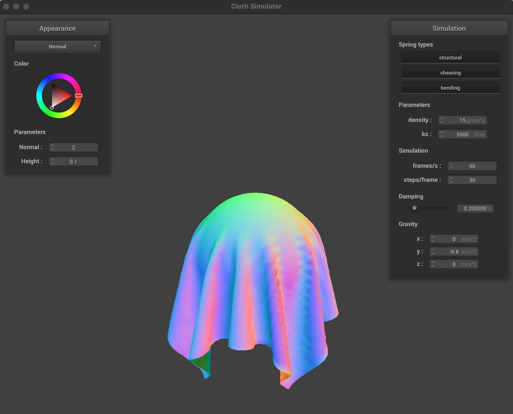
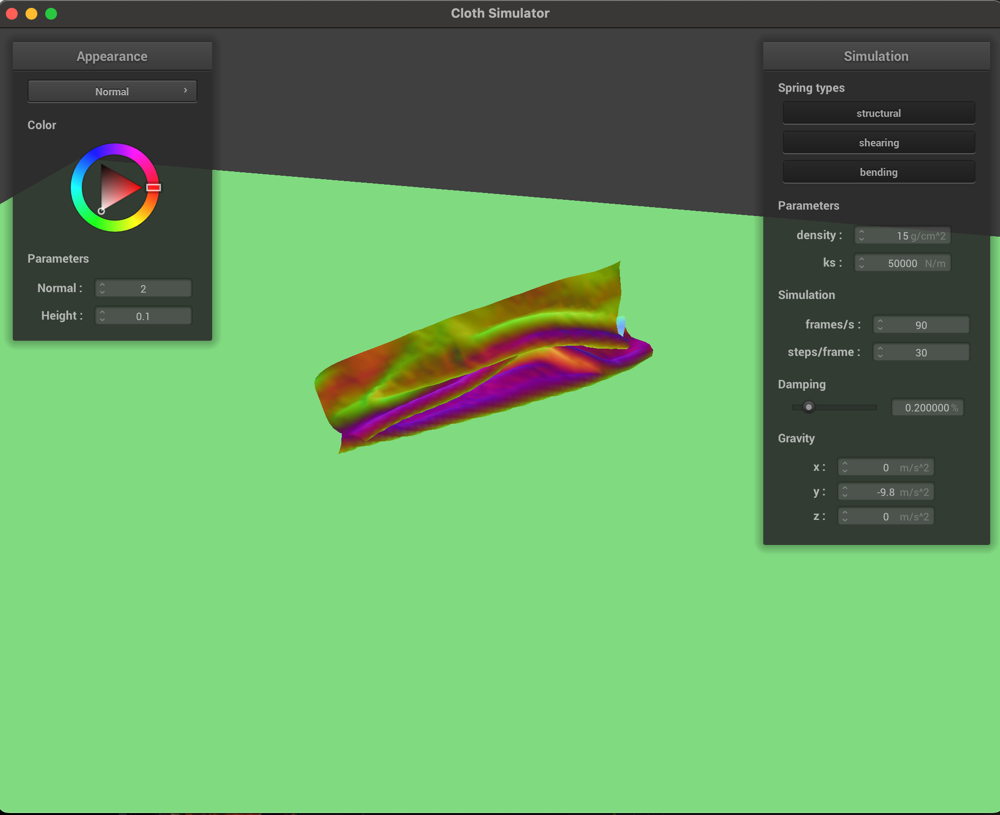
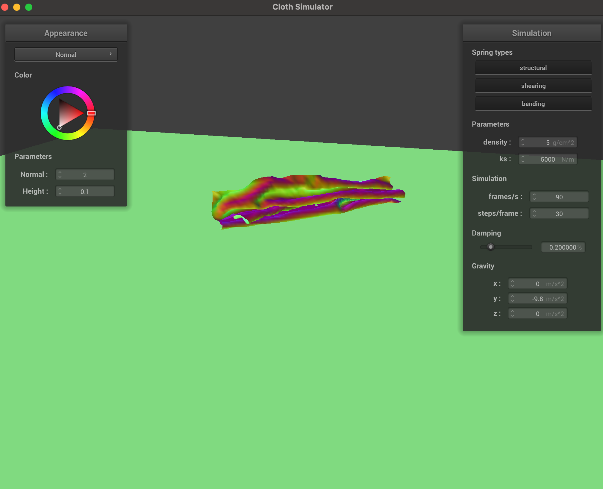

In this project, we implemented a cloth simulator using a spring and mass system with physics based simulation rules. We were able to simulate a piece of cloth falling and draping over a sphere, as well as a piece of cloth folding on itself on a plane. Finally, we were able to implement different types of shaders that reflect different types of surfaces and utilize those in our simulator.
Part 1: Masses and Springs
In this part, we set up the core system with which we will make our cloth simulator out of. We will use a spring and mass system, which starts with an evenly spaced grid of masses. Like most people probably, we didn't correctly store the point masses in row-major order the first time we did this. We only found out in part 3, and had to come back to fix it.
Once we have that, we just needed to designate certain point masses as pinned and then add springs to to our mesh that represent the different types of constraints, i.e. structural, shearing, and bending constraints.
Here are the deliverables.


Part 2: Simulation via numerical integration
For this part, we implemented the core logic of the simulation using Verlet integration.
For the first deliverable, we experimented with different hyperparameter settings on pinned2. First we set the spring density to a very small value (5) and a huge value (500,000). The first had the effect of introduce large ripples and oscillations that would not settle out due to the low spring constant, which was interesting. The second resulted in this crazy result that you can see where the cloth folds in on itself. It must be because a large spring constant results in more internal tension than gravity can overcome. We also tried setting a more reasonable value (like 50,000) and it simply falls down directly without rippling much.

|
|
We did the same thing for density, setting it to a small value like 5 and a large one like 100. It had the effect of pulling the cloth together tighter and letting it hang or droop more/less. For lower values, the cloth sagged less, while larger values sagged much more and had less ripples.
|
|
|
Finally, for damping, it simply slowed the speed at which our simulation iterates. Here is our resting state for pinned4.

Part 3: Handling collisions with other objects
In this part, we add support for cloth collisions with other objects like spheres and planes. This will allow us to see how our cloth interacts with other surfaces and drop a cloth on it.
The main issue we need to address is points which clip into our surfaces. For each point, we first determine if this is the case. If so, our gameplan occurs in three main steps:
- First find where the point would have intersected the surface of our object between the last position and the current one. Call this the tangent point.
- Find the correction vector we need to apply to our last position to get to the tangent point. For planes, we bump our vector back slightly.
- The point's new position is its last position adjusted by the above correction vector, accounting for friction (i.e. dividing by 1-f). Here we show our results from sphere using ks = 500, 5000, and 50000.
|
|

|
|
Here we can see that the value of ks controls how stiff the cloth is. When it is low, the cloth falls much more than when it is higher. It stiffens up and doesn't fall as low or bunch up as easily (like silk vs. paper). Finally, here is our cloth resting on the plane.

Part 4: Handling self-collisions
In this part, we tackle self-collisions in our cloth. This is necessary since the point masses in our cloth won't realize they're running into each other and make our cloth clip through itself. To fix this, we could iterate over all pairs of points and repel them if they come too close, but we instead utilize spatial hashing in order to create a faster solution.
For this, at every timestep we create a hash table that maps all the point masses which are in the same small 3D box volume to the same float. This partitions the space into these small 3D boxes which represent spatial locality. For our purposes, since the values never exceeded around 20, we chose a prime number like 29 and mapped the 3 integers to w*29^2 + h*29 + t.
Then we made sure to rebuild this hash table at every time step and then iterate over all our point masses, check for nearby points that are too close (i.e. within 2 * thickness distance apart), and if so repel them away from each other. One nasty bug we had was not accounting for the case when the number of nearby point masses was 0, and still dividing by this. This resulted in the point masses turning into NaNs, which was a non-obvious bug to track down.
Here are three screenshots showing our cloth at three progressive steps throughout the process.
|
|
|
|
Finally we also tested different densities and ks values. We noticed that as density decreases, the cloth tends to flow more (and same in the other direction), while as we increase ks, the cloth tends to be stiffer (and same vice versa). This holds up with observations found in previous parts for when we vary these
|

|

|